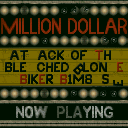

One of my biggest hobbies is digging into old computer games, looking at the codes and resources, and finding out how they work!
The Myst computer game series is actually pretty sentimental to me... my grandmother gave it to me as a Christmas present back in junior high. If you are unfamiliar with this game, it is about this guy, Atrus, who creates magical books which describe fantastic, eerie, beautiful and alien worlds... created by him. And when you touch a page in one of his books... you get transported to that world!
Immersive sounds, images, and movies... you have never seen anything like it!
Thanks to a program downloaded online called "Riveal" I was able to extract all the sounds, pictures, and movies from the Myst games. Using those sounds, I could mix the music, sound effects, and ambience to create nice little nature/spa tracks. A nice sample is shown here... and here are some nice images to accompany it.
For my final project at Red River College's Java course, I took an old macintosh computer game "The Odyssey" and created an editor for it. "The Odyssey" is a top-down view role-playing and dungeon exploration game... that unfortunately was made with only one scenario. Your job was to explore through dungeons, until you reach the deepest level, where the Chaos Master dwells in a rift in space/time. Then... get rid of him.
The text level data files were quite easy to undertand... so I took it upon myself to create an editor, using Swing GUI. I only had time to finish the "Terrain Editor" part before the class finished. Each terrain is represented by a character.
Example: P = Well-maintained stone wall, B = Grass, Q = Packed Earth, etc.
Remember this one? Old school 90's first person shooter? Run around killing aliens?
This was my final project of Red River College's SQL (Structured Query Language) course. I decided to create databases of the Duke Nukem 3D levels, the rooms, the walls of each room, and the various objects in each room, including weapons, scenery, and monsters. I programmed the SQL database to display the picture file names for each of the room's floor, ceiling, and walls. With SQL Server, it just displayed them in text... but now, using HTML, I can actually display the textures here in a table! This is the texture, lighting, and alignment data from the level's first sector (a single 3D space in the game):
| Texture | Lighting Level | X-Panning | Y-Panning | |
|---|---|---|---|---|
| Floor | 4 | 64 | 0 | |
| Wall #0 | -128 | 120 | 0 | |
| Wall #1 | -128 | 248 | 0 | |
| Wall #2 |  | -128 | 0 | 0 |
| Wall #3 | -128 | 0 | 0 | |
| Wall #4 | -128 | 8 | 0 | |
| Wall #5 | -7 | 0 | 0 | |
| Wall #6 | -7 | 0 | 0 | |
| Wall #7 | 11 | 0 | 0 | |
| Ceiling | 16 | 0 | 0 |
This particular sector is the marquee on the front of the movie theater (shown below).
Incidentally, I also programmed a stored procedure to delete all instances in every level of a creature I don't much care for (a disgusting green slime with teeth).
I have used SQL to categorize many other 3D first person shooter games, including the Marathon series, and Star Wars: Dark Forces. There's also enemies in those games I don't care for either, such as sewer creatures and big mouth beasts.
Playing a good game is always fun... but taking it apart can be fun too!